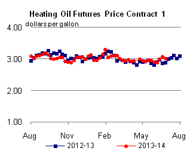

Released: July 2, 2014
Next Release: July 9, 2014
Midwest gasoline prices and supply
With the Fourth of July holiday weekend starting, the national average price for retail gasoline is $3.70 per gallon (gal). This is up about 4 cents/gal over the last six weeks and 21 cents/gal higher than last year at this time, but well below the spring price peaks reached in each of the previous three years. Most of the recent price increase is attributable to rising crude oil prices since unrest began in Iraq last month. However, there is significant regional variation in gasoline prices (Figure 1), with PADD 2 (the Midwest) having seen significant fluctuation over the past month.
While average Midwest retail prices at $3.67/gal are third highest among the U.S. Petroleum Administration for Defense Districts (PADDs), gasoline prices across the other PADDs ranged from $4.04/gal to $3.48/gal. Midwest gasoline prices can be volatile because of many factors, the most important of which are the logistics of supply and distribution to this region. PADD 2 covers a large geographic area consisting of multiple semi-connected markets. The landlocked region is also relatively isolated; it cannot directly access global markets, such as the actively traded Atlantic Basin, for additional supplies. Instead, Midwest gasoline supply comes primarily from refineries within the region, and is supplemented with pipeline shipments from neighboring PADDs, primarily the Gulf Coast, and local inventory withdrawals. Recent market changes have led to congestion in pipelines that move supplies to PADD 2. These factors were evident in the latest period of elevated gasoline prices in the Midwest.
{kind=link}
Beginning May 28, wholesale spot prices for conventional gasoline in Chicago rose 15 cents over five days, reaching $3.04/gal on June 3. The Chicago spot price was 7 cents/gal more than in New York Harbor on May 28 and by June 3 it was 23 cents more.
Despite the region’s refineries producing significant amounts of gasoline, the northern part of PADD 2, including Chicago, requires shipments from southern PADD 2 (Oklahoma and Kansas) and the Gulf Coast to meet demand. Most of this supply is delivered via the Magellan, Explorer and TEPPCO pipelines. The amount required to meet PADD 2 demand increases during peak-summer demand periods. Recent changes to pipeline infrastructure and other factors have led to congestion on pipelines that ship gasoline north.
As a result, PADD 2 has recently relied more heavily on inventories and in-region production. The recent price increases occurred even though refinery runs in the Midwest were high for this time of year. Crude runs for the week ending May 30 were 3.6 million barrels per day (bbl/d) in PADD 2, 329,000 bbl/d more than the five-year average (Figure 2). With high refinery runs insufficient and declining inventories -- Midwest gasoline inventories fell 1.5 million barrels from May 23 to 30 -- the next marginal barrel of supply into PADD 2 came from another PADD, and constraints in moving that supply led to higher prices in Chicago.
{kind=link}
Even with refinery runs at high levels, several refinery outages unexpectedly took supplies off the market, adding upward pressure to prices. Trade press reports indicated that the extension of a planned outage at Valero’s 180,000-bbl/d Memphis refinery, a major source of supply in the region, led to tight supplies and higher prices. Normally, the Memphis market would turn to the Centennial Pipeline and the TEPPCO Pipeline for additional supplies. However, Centennial was closed in late 2013 because of low volumes, and TEPPCO underwent changes that reduced the pipeline’s capacity to deliver gasoline.
Additionally, an outage at Marathon’s 240,000-bbl/d Catlettsburg, Kentucky, refinery led to brief supply tightening in the Ohio River Valley and to pipeline allocations on the Buckeye Pipe Line system, which flows product eastward from Chicago and refineries in western Ohio. The region can also be supplied via truck from Laurel Pipe Line terminals in Pittsburgh, but with Laurel also on allocation, supplies were limited.
Northern PADD 2 pulls additional volumes of gasoline from refineries in southern PADD 2 around Tulsa, Oklahoma, a pricing point known as Group 3, and the Gulf Coast via pipelines such as the Explorer Pipeline and the Magellan Pipeline (Figure 3). However, outages at refineries that supply those pipelines affect gasoline markets in the rest of PADD 2. Trade press reports that refinery outages in Group 3 (Tulsa) and farther south in the Gulf Coast contributed to market tightness and higher prices in Chicago. Specifically, outages at Marathon’s 522,000 bbl/d Garyville, Louisiana, refinery, the nation’s third largest, tightened supplies in the Gulf Coast available for shipment to PADD 2. The large price spreads between Chicago and Group 3, and between Chicago and the Gulf Coast, created incentives to move gasoline supply northward, and led to active shipping on Explorer and Magellan.
Spot wholesale gasoline prices in Chicago began to decline compared with New York prices after high crude runs and supplies arriving from Group 3 and the Gulf Coast via pipeline built PADD 2 gasoline inventories by 1 million barrels for the week ending June 13. Crude runs in PADD 2 for that week were 3.7 million bbl/d, 364,000 bbl/d more than the five-year average and the highest level since EIA began publishing the data in 1992. Spot prices in Chicago declined more than 9 cents/gal over the weekend of June 13-16. As a result Chicago prices were 3 cents below New York prices as of July 1.
{kind=link}
Gasoline prices flat, diesel fuel prices mixed
The average U.S. retail gasoline price was unchanged this week, remaining at $3.70 per gallon as of June 30, 2014, up 21 cents from the same time last year. The average West Coast price increased by three cents to $4.04 per gallon, while the Rocky Mountain price rose two cents to $3.63 per gallon. The East Coast price increased by a cent to $3.68 per gallon. The Midwest price decreased by two cents to $3.67 per gallon, and the Gulf Coast by one cent to $3.48 per gallon.
The U.S. average price for diesel fuel increased by less than a cent, remaining at $3.92 per gallon, up 10 cents from this time last year. The West Coast price increased by two cents to $4.07 per gallon. The Rocky Mountain and Gulf Coast prices both increased by less than a cent, to $3.92 and $3.82 per gallon, respectively. The Midwest price decreased by a penny to $3.87 per gallon, while the East Coast price fell less than a penny to $3.98 per gallon.
Propane inventories continue to rise
U.S. propane stocks increased by 2.6 million barrels last week to 56.2 million barrels as of June 27, 2014, 0.1 million barrels (0.2%) lower than a year ago. Gulf Coast inventories increased by 1.9 million barrels and Midwest inventories increased by 0.4 million barrels. East Coast inventories and Rocky Mountain/ West Coast inventories both increased by 0.1 million barrels. Propylene non-fuel-use inventories represented 7.3% of total propane inventories.
Text from the previous editions of This Week In Petroleum is accessible through a link at the top right-hand corner of this page.
 |
|||||||
| Retail Data | Change From Last | Retail Data | Change From Last | ||||
| 06/30/14 | Week | Year | 06/30/14 | Week | Year | ||
| Gasoline | 3.704 | Diesel Fuel | 3.920 | ||||
|
 | ||||||||||||||||||||||||||
| *Note: Crude Oil Price in Dollars per Barrel. | |||||||||||||||||||||||||||
| Stocks Data | Change From Last | Stocks Data | Change From Last | ||||
| 06/27/14 | Week | Year | 06/27/14 | Week | Year | ||
| Crude Oil | 384.9 | Distillate | 121.5 | ||||
| Gasoline | 213.7 | Propane | 56.240 | ||||